Виж рецепти за:
Салати без месо ⋅ Шопска салата ⋅ Салати с месо ⋅ Салати с пилешко ⋅ Салата Цезар ⋅ Салати с колбаси ⋅ Салати с шунка ⋅ Салати с кренвирши ⋅ Салати с бекон ⋅ Салати със сухи колбаси ⋅ Руска салата ⋅ Салати с риба ⋅ Салати с морски дарове ⋅ Салати и предястия със скариди ⋅ Салати с ролца от раци ⋅ Салати с миди ⋅ Салати-пюре ⋅ Кьопоолу ⋅ Пастети от маслини ⋅ Орехови разядки ⋅ Салати с картофи ⋅ Салати с домати ⋅ Салати с краставици ⋅ Салати с марули (зелени салати) ⋅ Салати с чушки ⋅ Салати с печени чушки ⋅ Салати с патладжани ⋅ Салати с тиквички ⋅ Салати със зеле ⋅ Салати с карфиол и броколи ⋅ Салати с праз ⋅ Салати със спанак ⋅ Салати с моркови ⋅ Салати с ряпа ⋅ Салати с репички ⋅ Бобени салати ⋅ Салати с царевица ⋅ Салати с грах ⋅ Салати с нахут ⋅ Салати с червено цвекло ⋅ Салати с ябълки ⋅ Салати с ананас ⋅ Салати с гъби ⋅ Яйчени салати ⋅ Салати с майонеза ⋅ Салати с кисело мляко ⋅ Салати със сметана ⋅ Салати с извара ⋅ Салати с паста ⋅ Салати с ориз ⋅ Топли салати ⋅ Нетрадиционни салати ⋅ Ефектно украсени салати ⋅ Дипове ⋅ Пастети от сирена ⋅ Рибни пастети ⋅ Катък ⋅ Риба тон ⋅ Киноа
Сподели рецептите
Нови снимки
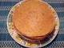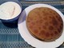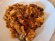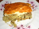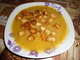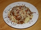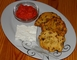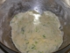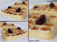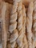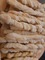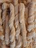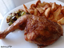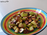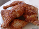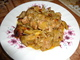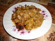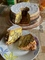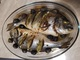
Рецепти на деня
© Информацията в този сайт или части от нея не могат да бъдат използвани без изричното съгласие на авторите.